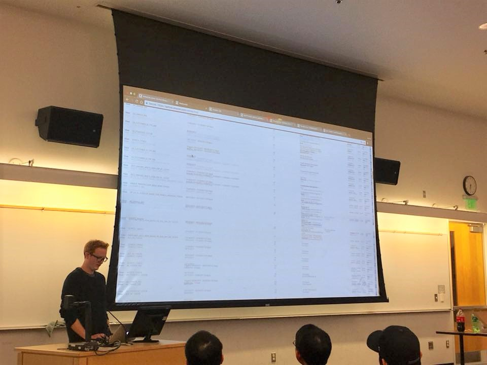

Professor Choe provided inspiration and advice for students hoping to do research. He began with introducing the Disaster Data Science Lab (DDSL), where undergraduate and graduate students are developing machine learning algorithms for annotating disaster relief routes on satellite images. The project is focusing on the Houston metropolitan area in the aftermath of Hurricane Harvey. Finding access routes through satellite imagery played a crucial role in allowing first responder to rescue people who were trapped, and the DDSL team hopes this new project will significantly aid future disaster relief efforts.
Professor Choe also provided key points of advice for students wanting to pursue research:
Dr. James McQueen shared his experiences in both academia and industry. While at UW, his research revolved around manifold learning, a technique for reducing the dimensionality of data to reveal underlying structures. His work culminated in a package called Megaman: Manifold Learning for MIllions of Points. You can check out this fusion of math, statistics, and programming on Github.
James currently works at Amazon and oversees the experimental platform, where experiments for all proposed website changes at Amazon are monitored. This experimental process is more complicated than it seems, and some behind-the- scenes factors that must be considered include the long-term effects of proposed changes, ad blindness, extreme purchases, and different demographic marketplaces. Skills that James advises students to hone in on include: computer science skills (especially being able to code proficiently in at least one language) and being able to explain Statistics to people of all different backgrounds. For those hoping to go into industry, he says internships are extremely important, and he suggests students think about applying early on in the school, especially for larger companies.
With characteristic humor and a buoyant enthusiasm, Winnie shared advice and lessons learned from her extensive experience in research and schoolwork. She started research as a sophomore and helped with the Muon g-2 collaboration with Fermilab. Winnie currently conducts physics and astronomy research regarding superconductors, high energy particle physics, and the Large Synoptic Survey Telescope (LSST), which is being built in Chile and will attempt to understand fundamental questions in Astronomy.
Advice she has for students hoping to get involved in research:
UW provide undergrad research programs, check this website:
Ask your professor or any research organization for available research opportunities. Send them an email with your resume and unofficial transcript. If you are confident in your writing abilities, include a cover letter; otherwise, it isn’t necessary.
Disaster data science lab:
https://www.ddslab.info/Or send an email to professor Yongjue Choe ychoe@uw.edu with your resume and unofficial transcript if you are interested in similar programs.
Large companies like Amazon, Google, Microsoft provide internships for undergraduate and graduate students. The applications usually close pretty early, so start checking their websites many months in advance if you want more information.